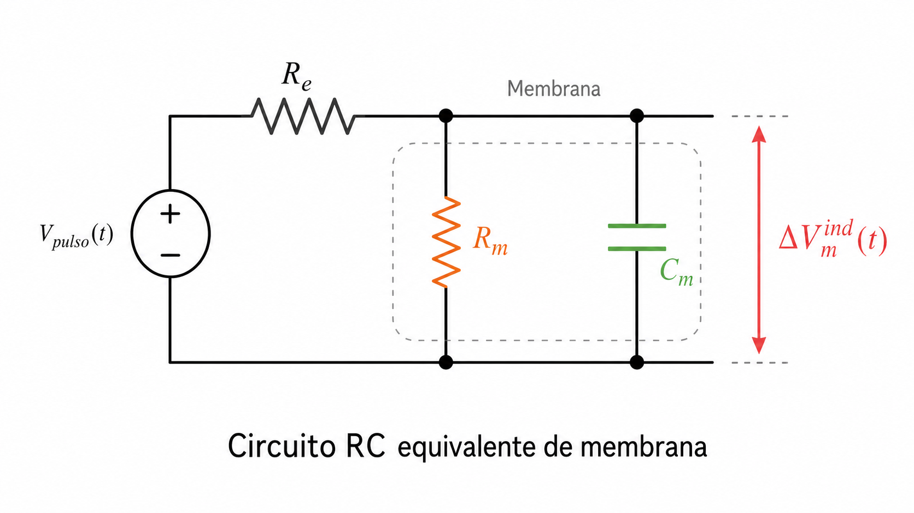
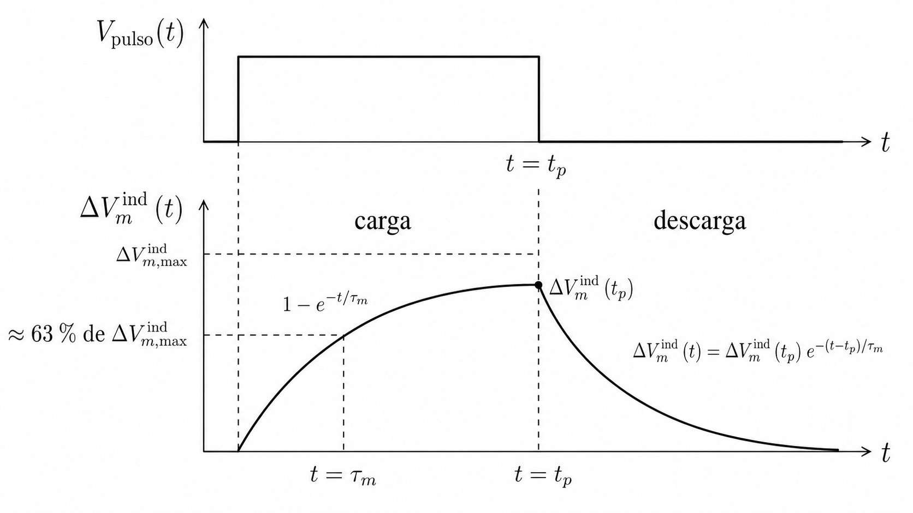

Dinámica temporal: circuito RC equivalente
1 Objetivo del módulo
Este módulo muestra cómo la membrana celular puede modelarse, en primera aproximación, como un sistema eléctrico transitorio de tipo RC. La idea central es que la membrana no alcanza instantáneamente el voltaje inducido máximo, sino que se carga progresivamente con una constante de tiempo característica.
En el módulo anterior se obtuvo la dependencia espacial aproximada del voltaje transmembrana inducido:
\[ \Delta V_m^{\mathrm{ind}}(\theta) \approx f\,a\,E_0\cos\theta \]
donde \(f \approx 1.5\) para una célula esférica en la aproximación clásica de Schwan.
Ahora incorporamos la dinámica temporal. Durante un pulso rectangular, la respuesta mínima puede escribirse como:
\[ \Delta V_m^{\mathrm{ind}}(\theta,t) \approx f\,a\,E_0\cos\theta \left(1-e^{-t/\tau_m}\right) \]
Esta expresión permite entender por qué pulsos muy cortos pueden requerir campos eléctricos mayores para inducir una polarización comparable a la producida por pulsos más largos.
2 Resultado central
Para un pulso rectangular aplicado a partir de \(t=0\), la respuesta temporal mínima de la membrana se puede escribir como:
\[ \Delta V_m^{\mathrm{ind}}(t) = \Delta V_{m,\max}^{\mathrm{ind}} \left(1-e^{-t/\tau_m}\right) \]
donde la constante de tiempo está dada por:
\[ \tau_m = (R_e \parallel R_m)\,C_m \]
y la resistencia equivalente en paralelo se define como:
\[ R_e \parallel R_m = \frac{R_eR_m}{R_e+R_m} \]
En el límite biológico usual, cuando la resistencia de membrana es mucho mayor que la resistencia efectiva del medio,
\[ R_m \gg R_e \]
se obtiene:
\[ \tau_m \approx R_e C_m \]
3 Variables y unidades
| Símbolo | Significado físico | Unidad |
|---|---|---|
| \(\Delta V_m^{\mathrm{tot}}(t)\) | Voltaje transmembrana total | V |
| \(\Delta V_{m,0}\) | Voltaje transmembrana basal previo al pulso | V |
| \(\Delta V_m^{\mathrm{ind}}(t)\) | Contribución inducida por el campo eléctrico | V |
| \(\Delta V_{m,\max}^{\mathrm{ind}}\) | Valor máximo o estacionario de la contribución inducida | V |
| \(t\) | Tiempo | s |
| \(t_0\) | Tiempo de inicio del pulso | s |
| \(t_p\) | Duración del pulso | s |
| \(\tau_m\) | Constante de tiempo de membrana | s |
| \(R_e\) | Resistencia efectiva del medio y la geometría | \(\Omega\) |
| \(R_m\) | Resistencia de membrana | \(\Omega\) |
| \(C_m\) | Capacitancia de membrana | F |
| \(a\) | Radio celular | m |
| \(E_0\) | Magnitud del campo externo | V/m |
| \(\theta\) | Ángulo polar respecto a la dirección del campo | rad |
| \(f\) | Factor geométrico de forma | adimensional |
4 Relación con el voltaje transmembrana total
Durante el pulso, el voltaje transmembrana total puede expresarse como:
\[ \Delta V_m^{\mathrm{tot}}(t) = \Delta V_{m,0} + \Delta V_m^{\mathrm{ind}}(t) \]
donde:
- \(\Delta V_{m,0}\) representa la contribución basal previa a la estimulación;
- \(\Delta V_m^{\mathrm{ind}}(t)\) representa la contribución inducida por el campo eléctrico.
En esta aproximación, la magnitud de la contribución inducida es máxima en los polos alineados con el campo.
5 Planteamiento físico
La bicapa lipídica actúa como una barrera dieléctrica delgada entre dos medios conductores: el citoplasma y el medio extracelular. Desde el punto de vista eléctrico, esta barrera puede almacenar carga, por lo que se modela como una capacitancia.
En una descripción mínima, la membrana se representa como una capacitancia \(C_m\) en paralelo con una resistencia de membrana \(R_m\). Esta combinación está acoplada al medio por una resistencia efectiva \(R_e\). Este circuito equivalente se ilustra en Figura 1.
La interpretación física es la siguiente:
- \(C_m\) representa la capacidad de la membrana para almacenar carga.
- \(R_m\) representa las rutas de fuga a través de la membrana.
- \(R_e\) representa la oposición efectiva del medio y la geometría al proceso de carga.
- La polarización inducida se desarrolla en el tiempo, no de forma instantánea.

6 Ecuación diferencial mínima durante el pulso
Si se aplica un pulso rectangular constante a partir de \(t=t_0\), la dinámica mínima de la contribución inducida puede escribirse como:
\[ \tau_m \frac{d\,\Delta V_m^{\mathrm{ind}}}{dt} + \Delta V_m^{\mathrm{ind}} = \Delta V_{m,\max}^{\mathrm{ind}} \]
Esta ecuación indica que la membrana tiende hacia un valor máximo inducido, pero lo hace con una rapidez controlada por \(\tau_m\).
Si al inicio del pulso se toma como condición inicial \(\Delta V_m^{\mathrm{ind}}(t_0)=0\), entonces la solución es:
\[ \Delta V_m^{\mathrm{ind}}(t) = \Delta V_{m,\max}^{\mathrm{ind}} \left(1-e^{-(t-t_0)/\tau_m}\right) \qquad \text{para} \qquad t_0 \le t \le t_0 + t_p \]
7 Interpretación de la constante de tiempo
La constante de tiempo \(\tau_m\) indica qué tan rápido se carga la membrana. Transcurrido un tiempo \(\tau_m\) desde el inicio del pulso:
\[ \Delta V_m^{\mathrm{ind}}(t_0 + \tau_m) = \Delta V_{m,\max}^{\mathrm{ind}} \left(1-e^{-1}\right) \approx 0.63\,\Delta V_{m,\max}^{\mathrm{ind}} \]
Por tanto, la membrana ha alcanzado aproximadamente el 63 % del valor máximo inducido al cabo de un tiempo \(\tau_m\) desde el inicio del pulso.
8 Descarga cuando cesa el pulso
Cuando el pulso termina en \(t = t_0 + t_p\), la fuente deja de impulsar la carga y la contribución inducida comienza a decaer, como se ilustra en Figura 2. En esa etapa, la ecuación diferencial pasa a ser:
\[ \tau_m \frac{d\,\Delta V_m^{\mathrm{ind}}}{dt} + \Delta V_m^{\mathrm{ind}} = 0 \]
con condición inicial:
\[ \Delta V_m^{\mathrm{ind}}(t_0 + t_p) = \Delta V_{m,\max}^{\mathrm{ind}} \left(1-e^{-t_p/\tau_m}\right) \]
La solución para la fase de descarga es:
\[ \Delta V_m^{\mathrm{ind}}(t) = \Delta V_{m,\max}^{\mathrm{ind}} \left(1-e^{-t_p/\tau_m}\right) e^{-(t - t_0 - t_p)/\tau_m} \qquad \text{para} \qquad t > t_0 + t_p \]
Esta expresión muestra que, una vez cesa el pulso, la contribución inducida no desaparece abruptamente: decae exponencialmente con la misma constante de tiempo del sistema.

9 Relación con la ecuación de Schwan
El valor máximo inducido puede aproximarse mediante la ecuación de Schwan:
\[ \Delta V_{m,\max}^{\mathrm{ind}}(\theta) \approx f\,a\,E_0\cos\theta \]
Al incorporar la dinámica temporal durante el pulso:
\[ \Delta V_m^{\mathrm{ind}}(\theta,t) \approx f\,a\,E_0\cos\theta \left(1-e^{-(t-t_0)/\tau_m}\right) \qquad \text{para} \qquad t_0 \le t \le t_0 + t_p \]
y luego, una vez cesa el pulso:
\[ \Delta V_m^{\mathrm{ind}}(\theta,t) \approx f\,a\,E_0\cos\theta \left(1-e^{-t_p/\tau_m}\right) e^{-(t - t_0 - t_p)/\tau_m} \qquad \text{para} \qquad t > t_0 + t_p \]
Estas expresiones combinan dos ideas físicas:
- La distribución espacial del voltaje inducido sobre la membrana.
- La evolución temporal asociada a la carga y descarga del sistema RC.
En los polos alineados con el campo, \(\cos\theta=\pm 1\), la magnitud de la polarización inducida es máxima. En el ecuador celular, \(\theta=\pi/2\), se tiene \(\cos\theta=0\), por lo que la contribución inducida idealizada se anula.
10 Ejemplo numérico
Supongamos una célula con \(a = 10\,\mu\text{m}\), un campo externo \(E_0 = 100\,\text{kV/m}\) y un factor geométrico \(f = 1.5\). El pulso se aplica a partir de \(t_0 = 1\,\mu\text{s}\).
En el polo celular, donde \(\cos\theta=1\):
\[ \Delta V_{m,\max}^{\mathrm{ind}} = 1.5 \left(10\times10^{-6}\,\text{m}\right) \left(100\times10^3\,\text{V/m}\right) = 1.5\,\text{V} \]
Si la constante de tiempo es \(\tau_m = 1\,\mu\text{s}\), entonces a \(t = t_0 + \tau_m\):
\[ \Delta V_m^{\mathrm{ind}} \approx 0.63\times1.5\,\text{V} \approx 0.95\,\text{V} \]
Si el pulso dura \(t_p = 3\,\mu\text{s}\), el valor alcanzado al final será:
\[ \Delta V_m^{\mathrm{ind}}(t_0 + t_p) = 1.5 \left(1-e^{-3}\right)\,\text{V} \approx 1.43\,\text{V} \]
y luego decaerá exponencialmente una vez el pulso cese.
11 Simulación interactiva
En esta simulación se explora la dinámica temporal de la contribución inducida del voltaje transmembrana durante y después del pulso.
NotaInstrucciones
Use los controles deslizantes para modificar:
- el tiempo de inicio del pulso \(t_0\);
- el voltaje máximo inducido \(\Delta V_{m,\max}^{\mathrm{ind}}\);
- la constante de tiempo de membrana \(\tau_m\);
- la duración del pulso \(t_p\);
- el tiempo total mostrado.
La gráfica superior muestra el pulso aplicado. La gráfica inferior muestra la respuesta temporal de carga y descarga de la membrana. Las líneas verticales de referencia indican \(t_0\) (azul), \(t_0 + \tau_m\) (gris) y \(t_0 + t_p\) (verde).
11.1 Panel interactivo
11.2 Código para Google Colab
El panel anterior funciona directamente en este portal. El siguiente código se ofrece solo para estudiantes que deseen reproducir o modificar la simulación en Python.
import numpy as np
import matplotlib.pyplot as plt
from ipywidgets import interact, FloatSlider
def simular_rc(
t0_us=1.0, Vmax=1.5, tau_us=1.0, tp_us=3.0, tiempo_total_us=12.0
):
"""
Simulación didáctica de carga y descarga RC de la membrana.
Para t0 <= t <= t0 + tp:
Delta V_m^ind(t) = Vmax * (1 - exp(-(t - t0)/tau))
Para t > t0 + tp:
Delta V_m^ind(t) = Delta V_m^ind(t0 + tp) * exp(-(t - t0 - tp)/tau)
"""
t_fin = t0_us + tp_us
tiempo_total_us = max(tiempo_total_us, t0_us + 1.2 * tp_us, t0_us + 4 * tau_us)
t = np.linspace(0, tiempo_total_us, 1000)
Vm = np.zeros_like(t)
Vtp = Vmax * (1 - np.exp(-tp_us / tau_us))
Vtau = Vmax * (1 - np.exp(-1))
for i, ti in enumerate(t):
if ti < t0_us:
Vm[i] = 0.0
elif ti <= t_fin:
Vm[i] = Vmax * (1 - np.exp(-(ti - t0_us) / tau_us))
else:
Vm[i] = Vtp * np.exp(-(ti - t_fin) / tau_us)
pulso = np.where((t >= t0_us) & (t <= t_fin), 1.0, 0.0)
fig, ax = plt.subplots(2, 1, figsize=(9, 7), sharex=True)
ax[0].step(t, pulso, where="post", linewidth=2.5)
ax[0].axvline(t0_us, linestyle="--", color="steelblue", label=r"$t_0$")
ax[0].axvline(t_fin, linestyle="--", color="green", label=r"$t_0 + t_p$")
ax[0].set_ylabel("Pulso")
ax[0].set_ylim(-0.1, 1.2)
ax[0].legend(fontsize=9)
ax[0].grid(True, alpha=0.3)
ax[1].plot(t, Vm, linewidth=2.5, label=r"$\Delta V_m^{ind}(t)$")
ax[1].axhline(Vmax, linestyle=":", color="gray",
label=r"$\Delta V_{m,\max}^{ind}$")
ax[1].axvline(t0_us, linestyle="--", color="steelblue",
label=r"$t_0$")
ax[1].axvline(t0_us + tau_us, linestyle="--", color="gray",
label=r"$t_0 + \tau_m$")
ax[1].axvline(t_fin, linestyle="-.", color="green",
label=r"$t_0 + t_p$")
ax[1].scatter([t0_us + tau_us, t_fin], [Vtau, Vtp], zorder=5)
ax[1].set_xlabel("Tiempo [µs]")
ax[1].set_ylabel(r"$\Delta V_m^{ind}(t)$ [V]")
ax[1].grid(True, alpha=0.3)
ax[1].legend(fontsize=9)
plt.tight_layout()
plt.show()
print(f"t₀: {t0_us:.3f} µs")
print(f"ΔV_m,max inducido: {Vmax:.3f} V")
print(f"τ_m: {tau_us:.3f} µs")
print(f"t_p: {tp_us:.3f} µs")
print(f"ΔV_m^ind(t₀ + τ_m): {Vtau:.3f} V")
print(f"ΔV_m^ind(t₀ + t_p): {Vtp:.3f} V")
print(f"Fracción alcanzada al fin pulso: {100*Vtp/Vmax:.1f} %")
interact(
simular_rc,
t0_us=FloatSlider(
value=1.0, min=0.0, max=10.0, step=0.05,
description="t₀ [µs]"
),
Vmax=FloatSlider(
value=1.5, min=0.1, max=3.0, step=0.05,
description="Vmax [V]"
),
tau_us=FloatSlider(
value=1.0, min=0.05, max=10.0, step=0.05,
description="tau [µs]"
),
tp_us=FloatSlider(
value=3.0, min=0.05, max=20.0, step=0.05,
description="tp [µs]"
),
tiempo_total_us=FloatSlider(
value=12.0, min=2.0, max=50.0, step=0.5,
description="total [µs]"
)
)12 Cómo interpretar la simulación
Durante el pulso, la membrana se carga de forma exponencial. Si \(t_p\) es mucho mayor que \(\tau_m\), la curva se aproxima a \(\Delta V_{m,\max}^{\mathrm{ind}}\).
Si \(t_p\) es menor o comparable con \(\tau_m\), la membrana no alcanza completamente el valor máximo inducido antes de que el pulso termine.
El valor alcanzado al final del pulso es:
\[ \Delta V_m^{\mathrm{ind}}(t_0 + t_p) = \Delta V_{m,\max}^{\mathrm{ind}} \left(1-e^{-t_p/\tau_m}\right) \]
Después de \(t_0 + t_p\), la contribución inducida decae como:
\[ \Delta V_m^{\mathrm{ind}}(t) = \Delta V_m^{\mathrm{ind}}(t_0 + t_p)\, e^{-(t - t_0 - t_p)/\tau_m} \]
AdvertenciaPrecaución física
Este modelo RC es una aproximación mínima. En células reales, la dinámica puede modificarse por geometría celular, conductividad del medio, permeabilización de la membrana, formación de poros, cambios de conductancia, temperatura, forma de onda y heterogeneidad celular.
13 Preguntas para explorar
- ¿Qué ocurre con \(\Delta V_m^{\mathrm{ind}}(t_0 + t_p)\) cuando se aumenta la duración del pulso \(t_p\)?
- ¿Qué ocurre si \(t_p\) es mucho menor que \(\tau_m\)?
- ¿Por qué a \(t = t_0 + \tau_m\) se alcanza aproximadamente el 63 % del valor máximo?
- ¿Qué cambia si se aumenta \(\Delta V_{m,\max}^{\mathrm{ind}}\) pero se mantiene constante \(\tau_m\)?
- ¿Por qué la descarga no empieza desde \(\Delta V_{m,\max}^{\mathrm{ind}}\), sino desde \(\Delta V_m^{\mathrm{ind}}(t_0 + t_p)\)?
- ¿Cómo afecta el tiempo de inicio \(t_0\) a la energía total depositada en la membrana durante el pulso?
14 Alcance y limitaciones
Este modelo RC es una representación mínima cuyo valor principal es pedagógico. Permite entender por qué la membrana necesita un tiempo finito para cargarse y descargarse.
Sin embargo, el modelo no incluye explícitamente:
- geometrías celulares complejas;
- membranas no esféricas;
- heterogeneidad espacial de la membrana;
- conductancias dependientes del voltaje;
- formación y evolución de poros;
- cambios en la conductividad durante la permeabilización;
- efectos térmicos;
- acoplamiento con organelos o estructuras intracelulares.
Por tanto, esta aproximación debe interpretarse como un primer modelo físico para entender la escala temporal de la polarización inducida, no como una descripción completa de todos los procesos de la electroporación.
15 Ideas clave
- La membrana puede modelarse, en primera aproximación, como un sistema RC.
- La contribución inducida \(\Delta V_m^{\mathrm{ind}}(t)\) no aparece instantáneamente, sino que crece exponencialmente a partir del inicio del pulso \(t_0\).
- La constante de tiempo \(\tau_m\) controla la rapidez de carga de la membrana.
- A \(t = t_0 + \tau_m\), la membrana alcanza aproximadamente el 63 % del valor máximo inducido.
- Si el pulso termina antes de completar la carga, la contribución inducida comienza a decaer exponencialmente.
- La descarga parte del valor alcanzado al final del pulso, \(\Delta V_m^{\mathrm{ind}}(t_0 + t_p)\).
- El modelo temporal puede combinarse con la ecuación de Schwan para incorporar simultáneamente dependencia angular y temporal.
16 Referencias
Ver Kotnik et al. (1998), Bilska et al. (2000), Kotnik et al. (2000) y Kotnik et al. (2019).
Referencias
Bilska, Anna O., Karin A. DeBruin, y Wanda Krassowska. 2000. «Theoretical Modeling of the Effects of Shock Duration, Frequency, and Strength on the Degree of Electroporation». Bioelectrochemistry 51 (2): 133-43. https://doi.org/10.1016/S0302-4598(99)00085-1.
Kotnik, Tadej, Damijan Miklavcic, y Lluis M. Mir. 2000. «Analytical Description of Transmembrane Voltage Induced by Electric Fields on Spheroidal Cells». Biophysical Journal 79 (2): 670-79. https://doi.org/10.1016/S0006-3495(00)76325-9.
Kotnik, Tadej, Damijan Miklavcic, Tomaz Slivnik, y Lluis M. Mir. 1998. «Time Course of Transmembrane Voltage Induced by Time-Varying Electric Fields: A Method for Theoretical Analysis and Its Application». Bioelectrochemistry and Bioenergetics 45 (1): 3-16. https://doi.org/10.1016/S0302-4598(97)00093-7.
Kotnik, Tadej, Lea Rems, Mounir Tarek, y Damijan Miklavcic. 2019. «Membrane Electroporation and Electropermeabilization: Mechanisms and Models». Annual Review of Biophysics 48: 63-91. https://doi.org/10.1146/annurev-biophys-052118-115451.